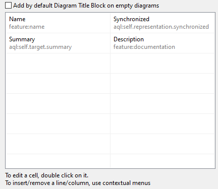
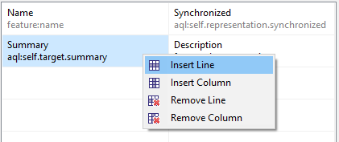
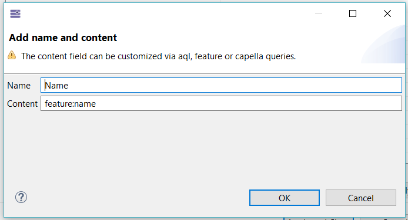
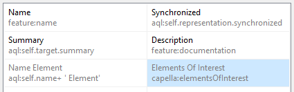

Preferences are available from the Window / Preferences menu. A section is dedicated to Capella.

The “Check model version at load time” provides a security when opening a model. It checks whether the model has been produced with the current version and thus whether it needs to be migrated or not. The drawback of activating this check is that the opening of models takes twice as long.
The AIRD Fragment File Extension option allows specifying the expected file suffix for AIRD fragments.
|
|
It is strongly recommended to use “airdfragment”. |
On the sub section of Capella / Delete preferences, it is possible to specify deletion options:
Protected Elements: It is possible to prohibit the deletion of certain critical elements (enabled by default). In that case, it will not be possible to delete these elements.
It is possible to identify protected elements in Project Explorer by enabling a decorator Capella Protected Elements under the General > Appearance > Label and Decorators section.

The following figure illustrates the prompted dialog when deleting the System Actor “Mission Control Operator”. All the elements in red will be deleted if the deletion is confirmed. The blue elements are the references towards the elements that are going to be deleted.


On the sub section of Capella / Diagram, it is possible to specify preferences for displaying diagrams:
When “ Navigate to related diagrams on double click” is activated, double clicking on specific elements will navigate to related diagrams instead of opening the Properties dialog.
This preference is enabled by default.
These specific elements are :
Double clicks in Semantic Browser view, Diagram editor and Project Explorer are affected.
The behaviour differs whether the element has related diagrams or not :


This section allows to define how the date is computed.
The date format field allows to define the date format.
The time zone field allows to define the time zone in two ways:
|
|
The date can be computed using these preferences with org.polarsys.capella.core.sirius.analysis.CapellaServices.getLastModificationDate(EObject). For example you can use it in a "Title block" with the AQL expression aql:self.getLastModificationDate(). |
|
|
If one of theses preferences is changed the diagram displaying the date in a "Title block" will become dirty after a refresh. |
On the sub section of Capella / Diagram / Process/Chain/Path Display, it is possible to specify preferences for displaying processes, Chains, paths in diagrams:
On the sub section of Capella / Diagram / Title Block, it is possible to specify preferences for displaying a Diagram Title Block in diagrams:



Sample of Title Block:

On the sub section Model of Capella preferences, it is possible to specify global behavior regarding the management of specific elements.

When “ Reuse of components” is activated, it activates to enable the reuse of components, creating several Parts from a Type. During a project creation, it activate a performance to reuse components.

In diagrams, you can use the Reuse Components palette tool. In Properties, selecting the Part will provide a way to select an available Type (e.g. Logical Component, Physical Components...).
When “ Multiple inheritance allowed” is activated, a Class can inherit from several other Classes. Otherwise, it can only have one inheritance ancestor.
When “ Component Non Actor inheritance allowed” is activated, a Component Non Actor can generalize other Components Non Actor (via Properties View or using Diagram Generalization tools). Otherwise, only Actors are allowed to generalize other Actors.
When “ Multiple deployment allowed” is activated, one given Behaviour Physical Component can be deployed on several Node Physical Components.
When “ Delete related associations when a class becomes primitive” is activated, existing associations towards the class which primitive status has changed is deleted automatically. If this option is not activated, then model validation is such cases will raise an error and the end user will be able to manually delete the obsolete association.
The three synchronization options define whether Port allocations and delegations are automatically set when performing allocations from editors. Activating this option helps improving the productivity.
On the sub section of Capella / Model Change Recorder preferences, it is possible to activate the model changer recording to log technical model or diagram modification .

You can configure it thanks to features such as the maximum file size or the number of day to keep files.
On the sub section of Capella / Model Valdation preferences, it is possible to manage preferences related to Capella Model Validation by choosing by choosing to enable or disable some validation results.

On the sub section of Capella / Project Explorer preferences, when the “ Project” option is activated, the semantic element “Project” is displayed (see illustration below). By default, this option is not active.
In order to modify configuration property values located on the Project element (reusable components or not, default values for progress monitoring, etc.).), you can activate temporary this option.

If the preference is activated, the tree will be displayed. For significant model, it can be useful to not display entire trees and use the Regex to find a specific model.

This section Capella / Refinement preferences is dedicated to delegation-based refinement of interface sequence diagrams. It is not relevant when exploiting Functional Analysis.

The checkbox “ Allow diagram creation” specifies whether a diagram shall be automatically created for the target scenario of the refinement.
The checkbox “ Allow diagram opening” specifies whether the diagram corresponding to the target scenario of the refinement shall be automatically opened or not.
The checkbox “ Perform a pre-validation” specifies whether the refinement tool shall perform a set of elementary check verifying the source scenario are ready for refinement. It is strongly recommended to activate this option as well as the following one “ Stop Refinement on pre-validation error”.

This section Capella / SCM preferences is related to the behaviour of Capella regarding the Software Configuration Management tool (e.g. Clearcase). The configuration option allows setting an automatic synchronization delay with the File System.
|
|
Activating this configuration option is mandatory when working with Clearcase Dynamic Views, in order to be notified immediately of changes performed by other users. |
On the sub section of Capella / Transfer Viewer preferences, it's recommended for huge models to disable the computation of labels for model elements which appear in the tree, it is also possible to allow the automatic expansion of trees in selection dialogs from Browse button in Properties view and also from Insert/Remove tool in diagram Palette.


If the preference is activated, the tree will be displayed. For significant model, it can be useful to not display entire trees.
On the sub section of Capella / Transitions/Generation preferences, it is possible to specify the scope of automatic transitions.